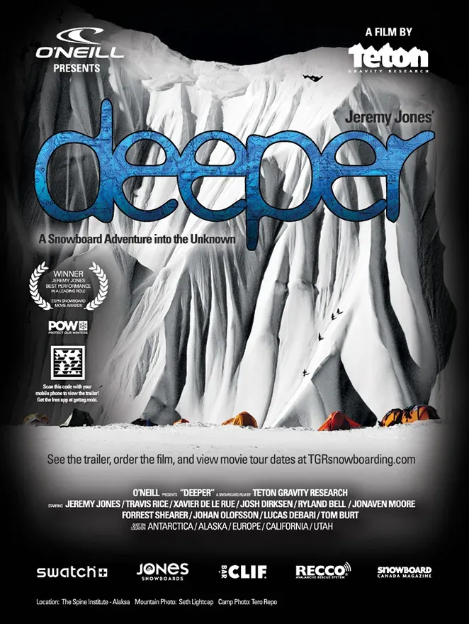
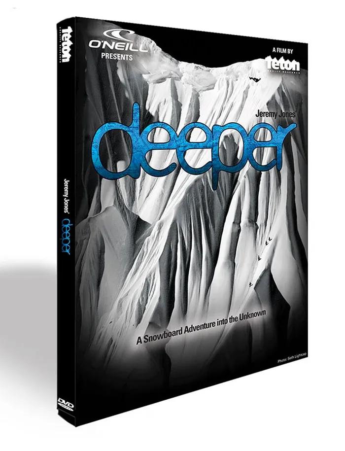

Work / Campaigns
Jeremy Jones’ Deeper
Packaging, poster, ads and DVD menu for TGR's snowboard film Deeper.
- Client
- Teton Gravity Research
- Services
- Packaging, Poster, Magazine ads, DVD menu, Marketing collateral
- Industry
- Action sports film
- Year
- To come: year

The challenge
One film, one look, across every release piece.
Deeper is Teton Gravity Research's snowboard film with Jeremy Jones, the first in the Deeper, Further, Higher trilogy. The release needed the box, a poster, magazine ads, the DVD menu and the marketing pieces around them.
Our approach
01
Key art
To come: approach copy
02
Packaging and DVD
To come: approach copy
03
Ads and rollout
To come: approach copy
The work


DVD menu · to come

Poster · to come
Collateral · to come
Detail · to come
What we delivered
PackagingPosterMagazine adsDVD menuMarketing collateral
Outcome
To come: outcome in your words, or a client quote